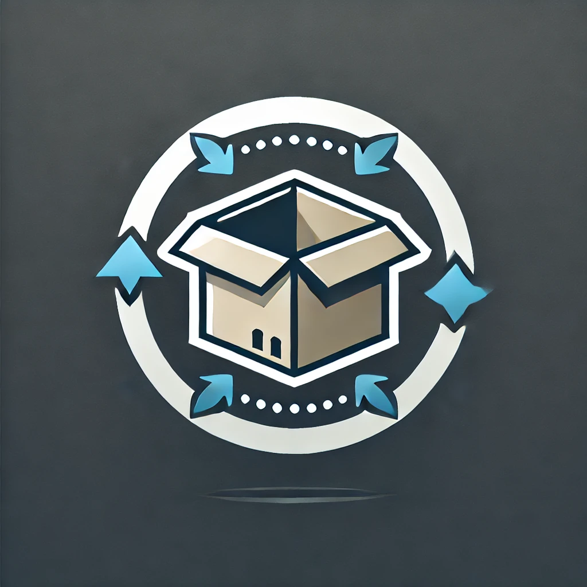

Informations du Projet
- Technologies : Laravel, PHP, MySQL, HTML, CSS
- Période : 2025
- Contexte : Deuxième projet pour le BTS SIO
- Code source : Voir sur GitHub
- Lien : Accéder au site
Ce projet de gestion de stock a été réalisé à l’école dans le cadre de mon BTS SIO. Il vise à gérer efficacement un inventaire de produits, à suivre les mouvements de stock et à éviter les ruptures ou erreurs de saisie. Ce projet m’a permis d’approfondir mes compétences en développement Laravel dans un contexte concret.


Ce projet m’a permis de maîtriser Laravel et ses composants (routes, contrôleurs), d’intégrer une base de données relationnelle efficace. J’ai également appris à à structurer une application proprement et à tester les différentes fonctionnalités.